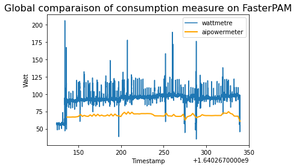

Machine and Deep Learning Benchmarks with wattmeters¶
Schneider Power meters¶
The previous power measurements are based on specific softwares and hardwares. In order to evaluate the precision and the ground truth, we describe here how to install and use a Schneider set of power meters. The raw material described in this section is a Schneider box (see images below) that measures voltage and active power of (up to) 3 servers. This material is commonly used in data centers in order to monitore several different machines. This box measures at two different frequencies the active power (in Watts) and the voltage as follows:
at a low frequency regime (up to 1 second), the box saves measurements (at least the past 3 years) that could be downloaded in tsv format by connecting a laptop to the wifi of the box, and using a simple web interface,
at a high frequency (10 ms), time series are sent via a ethernet cable and a small chip to be readible in a laptop using a given software named wattmeter_rapid1 that creates log at this high frequency.

It is then possible to use one of these two data sources and compare the ground true to the measurements of RAPL and nvidia-smi.
Compilation and execution of wattmeter_rapid1:
gcc -std=c11 -o wattmetre-read wattmetre_main.c wattmetre_lib.c -lm
./wattmetre-read --tty=/dev/ttyUSB0 --nb=6 > logfile
Remark : if you have trouble to access to /dev/ttyUSB0, we should use the following command :
sudo chmod 666 /dev/ttyUSB0
Benchmarks¶
First tests have been realized to compare measurements done with AIPowerMeter and Schneider Power meters. The measures with the Schneider Power Meter are stored in a logfile and looks like :
{kind=link}
Benchmark at Prof En Poche
With Prof En Poche, we are jointly working on adaptive learning and especially on clustering of student profils. We have compared the compsumption of two clustering methods, the PAM KMedoids algorithm in multiprocessing with PyClustering library and an improved version FasterPAM implemented here . We have also measured the consumption with AIPowerMeter. Here, we only use the CPU and not GPU. The behaviour is essentially the same.
There is a constant difference between the two measures because the RAM consumption and other hardware components are not necessarily available.
At the end, we observe the following compsumptions :
- For FasterPAM :
19,181.3 J (Joules) with the wattmeter and 14,107.4 J with AIPowerMeter,
during aound 200 seconds,
- For PAM with multiprocessing :
39,061.5 J with the wattmeter and 28,027.0 with AIPowerMeter
during around 250 seconds.
Benchmark on image classification with AlexNet
In order to compare the AIpowermeter package and the real consumption from a wattmeter. We are interested in the power consumed during the training of an alexNET on a CIFAR10 data set. We use classical gradient descent with a learning rate of 0.001 as optimizer and the cross entropy as loss.

We can see above the overview of the power consumed by the machine during the training of an alexnet. Noticed that we have both a larger variance and about 250 times more data measured by the wattmeter than by AIpowermeter. Let’s zoom in on the hatched part which corresponds to the epoch 5 to 11.
{kind=link}
In order to “correct” the excessive variance of the wattmeter, we have represented in dark blue the moving average, with a step of 200, calculated on our data. The observation of these 5 epochs allows us to observe a clear descent of the consumption between some epoch. The wattmeter is more precise and shows us that the consumption is not constant during an epoch.
A complete jupyter-notebook is available here.